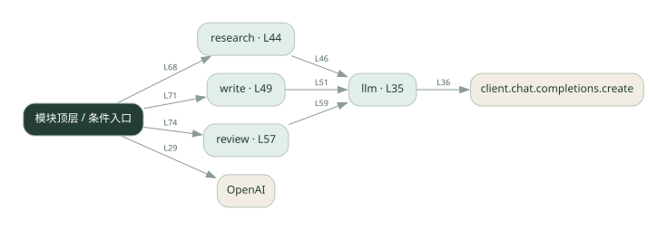

2-2 · 全课程第 22 节
多阶段流水线
pipeline.py
源码快照 554d7a8194c7 · 静态解析 · 2026-09-10
01 / 要完成的事
研究结果交给写作，写作结果再交给审阅。
02 / 为什么要做
后一步需要前一步产物，顺序传递比同时开工更合适。
03 / 当前代码状态
存在外部服务或模型依赖；执行前需按源文件配置依赖和凭据，可能联网或产生 API 费用。 本次只做静态解析，没有运行练习，也没有替你填写或修改原代码。
04 / 调用图
打开大图 ↗实线：源码中的直接调用；虚线：函数引用/注册、动态调用或按方法名推断的候选。L 是调用所在源码行号。箭头不表示执行顺序或每次必经；分支、循环、异步调度及框架内部调用需结合源码。灰色是外部/未解析目标，橙色是动态分发；省略 print、len 和常规容器操作以减少干扰。孤立函数可能尚未接入。

先从 模块入口 出发，沿箭头找到本文件函数，再查看外部调用或动态分发。右侧调用清单保留所有静态调用点，能回到原文件逐行对照。
05 / 函数定位
| 函数 / 定义行 | 职责（源码注释） | 内部调用 |
|---|---|---|
llmL35 | 以源码函数体为准；下列调用展示其依赖。 | client.chat.completions.create, resp.choices[动态键].message.content.strip |
researchL44 | 阶段1：研究，收集素材 | llm |
writeL49 | 阶段2：写作，基于素材写文章 | llm |
reviewL57 | 阶段3：审核，挑毛病并给改进版 | llm |
这样做的优点
每阶段输入输出明确，容易单独调试。
代价与局限
早期错误会被后面继承；总延迟累加。
适用场景
资料整理、成稿、审核等顺序工作。
不宜直接照搬
各任务互相独立且追求并发速度的场景。
动手检验理解
故意让研究结果缺少依据，检查审阅能否指出。
有未实现位置时先预测，再补齐验证。能启动不等于逻辑正确。
查看全部 15 个静态调用 / 引用点
| 调用方 | 目标 | 源码行 | 类型 |
|---|---|---|---|
| <模块入口> | OpenAI | 29 | 调用 |
| llm | client.chat.completions.create | 36 | 调用 |
| llm | resp.choices[动态键].message.content.strip | 41 | 调用 |
| research | llm | 46 | 调用 |
| write | llm | 51 | 调用 |
| review | llm | 59 | 调用 |
| <模块入口> | print | 64 | 调用 |
| <模块入口> | print | 65 | 调用 |
| <模块入口> | print | 66 | 调用 |
| <模块入口> | research | 68 | 调用 |
| <模块入口> | print | 69 | 调用 |
| <模块入口> | write | 71 | 调用 |
| <模块入口> | print | 72 | 调用 |
| <模块入口> | review | 74 | 调用 |
| <模块入口> | print | 75 | 调用 |